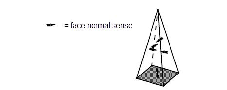

| |
Checking |
| <<< Clash Detection Of Bodies | Chapters | Introduction To Manipulating Topology >>> |
Parasolid assumes that any bodies you are working with are valid. Most functions do not check the bodies you pass to them, and do not work properly if you hand them an invalid body. Therefore it is necessary to have the ability to test the validity of a body, for which Parasolid uses either the appropriate checking function or local checking which is available via an argument that is part of specific functions. Both these methods are explained in more detail later in this chapter.
For an example of explicit validity-checking, see the code example in the
C++\Code Examples\Inquiries\Model Analysis\Validity
folder, located in
example_applications
in your Parasolid installation folder.
The Parasolid checker is intended to:
Checking is a time-consuming operation and can be much slower than local checking. If you turn local checking OFF to save time when you are performing a sequence of local operations, or you want one of the intermediate operations to create an invalid body, you can call PK_BODY_check to check the final body. If PK_BODY_check indicates that the body is invalid then roll back to a point before the local operations, and try a different approach.
Local checking is a time-saving tool because, in contrast to a full body check, it only checks the features of the model that were changed by that particular operation.
By default, the checking functions make all the checks appropriate to the supplied entity, but the caller may control which checks are applied by supplying options to the relevant checking function. The checking functions available are listed below.
The different types of checks are performed in groups in a certain sequence, where each group of checks only proceeds if the previous checks have all passed; therefore, checks which rely on the results of previous checks are omitted if these have failed. This means that the checking functionality does not guarantee to find all the faults if there is more than one.
An option structure, specific to each checking function, allows you to set which checks are to be performed and how many faults are to be returned:
max_faults |
Sets an upper limit on the number of faults found. See Section 31.2.1, “The number of faults to be returned”, for more information. |
geom |
|
bgeom |
|
mesh |
Check mesh data. See Section 87.4, “Checking meshes”, for more information. |
top_geo |
Which if any topology geometry consistent checks are to be performed. |
size_box |
|
fa_x |
|
loops |
|
fa_fa |
|
sh |
|
corrupt |
|
nmnl_geom |
|
returns |
Control the level of information returned. See Section 31.2.2, “Enhancing the faults returned”, for more information. |
extra_faults |
Return additional information about bodies that are found to have a corrupt data structure. See Section 31.2.2, “Enhancing the faults returned”, for more information. |
attribs |
The following table summarizes which options are available in which checking functions:
max_faults |
|||||||
geom |
|||||||
bgeom |
|||||||
mesh |
|||||||
top_geo |
|||||||
size_box |
|||||||
fa_x |
|||||||
loops |
|||||||
fa_fa |
|||||||
sh |
|||||||
corrupt |
|||||||
nmnl_geom |
|||||||
returns |
|||||||
extra_faults |
|||||||
attribs |
For more information on all the available options, see the documentation for PK_BODY_check in the PK Interface Programming Reference Manual.
|
Note: For assemblies, geometry (including mesh) and attribute checks only apply to the assembly and its instances and not to any sub-component bodies or assemblies. |
These checking functions never return more than
max_faults
faults. If
max_faults
is set to zero and any fault is found, the function fails with the error PK_ERROR_check_error. The application may thereby force all check faults to cause errors. The entity in error is returned in the error standard form.
If
max_faults
is set greater than zero then up to
max_faults
check faults may be returned.
It is not guaranteed that all faults will be found even if max_faults should be large enough. To acquire as many faults as possible, the application should set
max_faults
to a large number, e.g. 1000.
You can use the
returns
option in PK_BODY_check, PK_FACE_check, and PK_EDGE_check, to enhance the fault information that is returned. This option can take the following values:
|
Ensures that the information returned includes all possible enhancements. In Parasolid V30.1 and above, setting this value is the same as setting PK_check_returns_5_c. |
|
|
PK_check_returns_1_c |
These values return enhanced fault information in addition to the fault information for PK_check_returns_0_c. For more details on the specific information returned for each value, see PK_BODY_check_o_t in the PK Interface Programming Reference Manual. |
In addition, you can use the
extra_faults
option in PK_BODY_check and PK_GEOM_check to return additional information about bodies that are found to have a corrupt data structure. This can take the following values:
|
Ensures that the information returned includes all possible enhancements. In Parasolid V23.0 and above, setting this value is the same as setting PK_check_extra_faults_1_c. |
|
|
Return additional information when a corrupt data structure is detected. If this value is used, a wide range of return tokens may be used instead of PK_BODY_state_corrupt_c (PK_BODY_check) and PK_ENTITY_state_invalid_c (PK_GEOM_check). See the documentation for PK_BODY_check_o_t and PK_GEOM_check_o_t in the PK Interface Programming Reference Manual for complete details on the additional faults that may be returned. |
|
|
Do not return additional information about corrupt bodies. This is the default. See the documentation for PK_BODY_check_o_t and PK_GEOM_check_o_t in the PK Interface Programming Reference Manual for complete details on the additional faults that may be returned. |
See Section 31.3, “What the return tokens mean”, for more information on the tokens returned.
System attributes can be checked for validity in one of the following ways:
This section explains what checks are performed in these situations, and describes how you can control system attribute checking to suit your needs.
See Chapter 95, “Attribute Definitions”, and Chapter 96, “Attributes”, to learn more about how to use attributes. See Appendix A, “System Attribute Definitions”, for a description of the standard system-wide attributes that are provided by Parasolid.
When checking system attributes, the following checks can be performed. Parasolid automatically performs the relevant checks according to the information being checked.
If you are performing a general check on one or more entities, using one of the functions PK_ASSEMBLY_check, PK_BODY_check, PK_EDGE_check, PK_FACE_check, or PK_GEOM_check, you can use the
attribs
option to check the validity of system attributes attached to those entities. This option takes the following values:
|
Perform checks on any system attributes attached to any of the entities being checked. |
See Section 31.3.2, “Faults associated with checking system attributes”, for a list of the faults that may be returned when
attribs
is PK_check_attribs_yes_c.
You can also check the system attributes attached to a group of entities, without performing other types of checks. To do this use PK_ENTITY_check_attribs. This function receives the following arguments:
entity |
|
attdef |
Use this argument to check only a specific type of system attribute.
Use PK_ATTDEF_find to find the attribute definition for a system attribute. All system attributes have names that start with “SDL/TY”. See Appendix A, “System Attribute Definitions”, for more information. |
options |
If the
check_sub
option is PK_LOGICAL_true, then any sub-entities of the given entity are also checked, according to the hierarchy shown in
Figure 31-1. For example if
entity
is a loop, then when
check_sub
is PK_LOGICAL_true, Parasolid checks the loop, its fins, edges, and vertices, any curves attached to the fins or edges, and any points attached to the vertices.
Figure 31-1 Entity hierarchy used when checking system attributes on sub-entities
Like other checking functions, PK_ENTITY_check_attribs returns a structure containing return tokens that describe any faults found. See Section 31.3.2, “Faults associated with checking system attributes”, for a list of the faults that may be returned .
System attributes are automatically checked when you set the information in the attributes themselves. Checks are made when setting system attribute values using any of the following functions: PK_ATTRIB_set_ints, PK_ATTRIB_set_named_ints, PK_ATTRIB_set_doubles, PK_ATTRIB_set_named_doubles, PK_ATTRIB_set_string, PK_ATTRIB_set_named_string, PK_ATTRIB_set_ustring, PK_ATTRIB_set_named_ustring, PK_ATTRIB_set_vectors, PK_ATTRIB_set_named_vectors, PK_ATTRIB_set_axes, PK_ATTRIB_set_named_axes, PK_ATTRIB_set_pointers, PK_ATTRIB_set_named_pointers,
In these cases, only the checks relevant to the type of field being set are called. For example a call to PK_ATTRIB_set_doubles does not perform checks for the validity of string fields.
Entities may fail the checker for a number of reasons; not all of these mean that the entity is completely corrupt and no longer suitable for modeling. This section provides additional detail on each of the fault types, except for those that get returned when the
expand
option is used, and suggestions on what should be done in each case.
Most modeling operations continue to work on a body that has failed the check in a local fashion (e.g. with one invalid face, edge, or piece of geometry) so long as the offending area is not directly involved in the operation. Often the best way to salvage such a body is to remove the offending entities altogether with a local operation or boolean.
Similarly, many modeling operations work on a body which has failed the face-face inconsistency check (for instance, if regions interpenetrate), although the hidden-line algorithm may fail; and mass properties calculations may give misleading answers.
Note: As mentioned in Section 31.2.2, “Enhancing the faults returned”, if you set the
extra_faults
option in PK_BODY_check or PK_GEOM_check to anything other than PK_check_extra_faults_0_c (Default), then other more specific tokens may be returned instead of PK_BODY_state_corrupt_c (PK_BODY_check) and PK_ENTITY_state_invalid_c (PK_GEOM_check). See Section 31.3.1, “Additional information for bodies with corrupt data structures”, for details of the tokens that may be returned when using this option in PK_BODY_check. See the PK Interface Programming Reference Manual for more information on the tokens that may be returned when using this option in PK_GEOM_check. |
|
PK_ASSEMBLY_state_corrupt_c |
The returned entity is corrupt. This can happen if the caller does not roll back after a modeling error (e.g. a boolean failure); otherwise it usually means a serious bug in Parasolid, which should be reported, although occasionally it may be caused by an invalid sequence of calls to the PK interface. The caller must roll back or restart the modeler (PK_ENTITY_delete sometimes fails on corrupt parts). |
|
The assembly is self-referencing.This can happen if the assembly has at least one instance with a child part that is ultimately a parent, making the assembly graph cyclical. If this fault occurs in assemblies created in Parasolid, it should be reported as a serious bug in Parasolid. |
|
|
This fault can be corrected by calling PK_PART_rectify_identifiers. If this fault occurs in bodies or assemblies created wholly in later versions of Parasolid, or after PK_PART_rectify_identifiers has been called on any body, it should be reported as a serious bug in Parasolid. However, it should not cause problems unless the application is using identifiers and relying on their uniqueness. |
|
|
This can arise naturally after local operations, or if geometry has been explicitly deleted or detached; there are several ways to remedy the situation (e.g. PK_EDGE_attach_curves_2, PK_FACE_attach_surf_fitting). Bodies that are invalid because of missing geometry are identified as such by the checker. You create a body like this in the process of making a sheet by scribing lines on a wire body. When the wire is closed you have a sheet with edge geometry. PK_BODY_check detects this, and the problem can be rectified using PK_FACE_attach_surf_fitting to create a surface for one of the faces. A body with missing geometry can be manipulated by most local operations (see Chapter 63, “Overview of Editing Models”), provided the parts of the body which are changed have geometry attached. Boolean operations cannot be performed on bodies with missing geometry, and in general, care is needed in their manipulation. |
|
|
This can happen if geometry is constructed incorrectly with parameter checking switched off (see PK_SESSION_set_check_arguments). It is usually possible to rescue the model by deleting the offending geometry and replacing it with valid geometry. |
|
|
These can happen if geometry is created with self-intersection checking switched off (see PK_SESSION_set_check_self_int); again, it is best to replace the offending geometry. |
|
|
Geometry not G1-continuous, or fails other composite geometry checks |
This can happen if the composite geometry checks are switched off (see PK_SESSION_set_check_continuity) when the geometry is attached to topology; some modeling operations may work with the offending geometry, but it is best to replace it if possible. |
|
Like PK_TOPOL_state_not_G1_c, this can happen if the composite geometry checks are switched off (see PK_SESSION_set_check_continuity) when the geometry is attached to topology; some modeling operations may work with the offending geometry, but it is best to replace it if possible. It is returned only when enhanced fault reporting is switched on using the |
|
|
Topology’s geometry has an invalid degeneracy
PK_TOPOL_state_u_parm_degen_c |
The geometry attached to the topology contains an invalid degeneracy. Parasolid can identify both parametric and physical degeneracies, in either the u, v or both parameters, returning the appropriate token as listed above. These tokens are returned only when enhanced fault reporting is switched on using the |
|
The related edge has been turned into a ring edge by the large tolerances, leaving an open curve as the geometry. This token should not arise under normal circumstances. It indicates an internal failure which could arise, for example, if the tolerances on the edge become so large as to consume features incorrectly. |
|
|
The related edge has been turned into a ring edge by the large tolerances, leaving an open curve as the nominal geometry. This token should not arise under normal circumstances. It is similar to PK_EDGE_state_open_c, except that the problem is indicated by the nominal curve on the edge, rather than the edge itself. |
|
|
This could arise as a result of a tolerance mismatch, or incorrect use of PK_EDGE_attach_curves_2. Resetting tolerances or re-positioning the geometry should resolve the fault. |
|
|
This token should not arise under normal circumstances, because the functions for attaching nominal geometry perform enough checks to prevent it. It indicates an internal failure in which the tolerances on the nominal geometry have become too large, and a body exhibiting this would probably have other failures. To resolve this problem, either reset the tolerances on the nominal geometry or, failing this, detach the nominal geometry from the body. |
|
|
This could arise as a result of incorrect use of PK_EDGE_attach_curves_2. Detaching the curve, negating it, and re-attaching it would solve the problem. |
|
|
This token should not arise under normal circumstances, because the functions for attaching nominal geometry perform enough checks to prevent it. It indicates an internal failure in which the tolerances on the nominal geometry have become too large, and a body exhibiting this would probably have other failures. To resolve this problem, either reset the tolerances on the nominal geometry or, failing this, detach the nominal geometry from the body. |
|
|
This could happen as a result of invalid SP-curve data, or more likely an unsuitable tolerance value on the edge, which could be resolved using PK_EDGE_set_precision_2 or PK_VERTEX_attach_points. |
|
|
This token should not arise under normal circumstances, because the functions for attaching nominal geometry perform enough checks to prevent it. It indicates an internal failure in which the tolerances on the nominal geometry have become too large, and a body exhibiting this would probably have other failures. To resolve this problem, either reset the tolerances on the nominal geometry or, failing this, detach the nominal geometry from the body. |
|
|
Again, this could be a tolerance problem or the result of incorrect use of PK_EDGE_attach_curves_2. Resetting tolerances or replacing the geometry of the edge or vertices should resolve the fault. |
|
|
This can only happen on a non-manifold edge. It means that the order of the faces around an edge in the topological data structure does not agree with the order of the surfaces attached to those faces. |
|
|
This token is returned when the set of polylines associated with an edge is inconsistent. This could be due to the polylines not being watertight or having incompatible directions. |
|
|
This could arise as a result of a tolerance mismatch, or incorrect use of PK_FACE_attach_surfs or PK_VERTEX_attach_points. Resetting tolerances or re-positioning the geometry should resolve the fault. |
|
|
This could arise as a result of a tolerance mismatch, or incorrect use of PK_EDGE_attach_curves_2 or PK_FACE_attach_surfs. Resetting tolerances or re-positioning the geometry should resolve the fault. |
|
|
This could arise as a result of a local operation which produces a self-intersecting body. Further local operations to remove the self-intersection, or a subsequent modeling operation which destroys the offending face, should resolve the fault. |
|
|
This could arise as a result of incorrect use of PK_EDGE_attach_curves_2. Re-attaching the curves so that their edges are correctly ordered around the vertex should resolve the fault. |
|
|
This could arise as a result of incorrect use of PK_EDGE_attach_curves_2 or PK_SURF_make_sheet_trimmed. It means either that the directions of the loops in the face are wrong, or that the number and types of loops in the face are inconsistent with the surface type. |
|
|
The face created is redundant with respect to tolerances. This could arise as a result of incorrect use of PK_SURF_make_sheet_trimmed. No entities are returned with this token. |
|
|
The direction of the curves supplied for a loop are inconsistent. This could arise as a result of incorrect use of PK_SURF_make_sheet_trimmed. No entities are returned with this token. |
|
|
The combination of loops formed by the curves does not form a valid face on the supplied surface. This could arise as a result of incorrect use of PK_SURF_make_sheet_trimmed. No entities are returned with this token. |
|
|
This could arise as a result of incorrect use of PK_EDGE_attach_curves_2. The problem could be avoided by introducing the surface into the model in a different way (e.g. PK_SURF_make_sheet_body). |
|
|
This could arise as a result of incorrect use of PK_EDGE_attach_curves_2 or PK_FACE_imprint_curves_2 on a general body. It means that a wire-frame edge intersects a face other than at a vertex. |
|
|
This could arise as a result of incorrect use of PK_EDGE_attach_curves_2 or PK_FACE_imprint_curves_2 (with local checking turned off) on a wire or general body. It means that two wire-frame edges intersect other than at a vertex. |
|
|
This could arise if two edges that share common vertices touch at a position other than at those vertices. |
|
|
This fault should be avoided, but does not mean that modeling operations will necessarily fail. Modeling with entities outside the size-box may often work, but is not recommended, as resolution problems are more likely to occur. |
|
|
This could arise as a result of a local operation which produces a self-intersecting body. Further local operations to remove the self-intersection, or a subsequent modeling operation which destroys the offending region, should resolve the fault. |
|
|
This could arise as a result of incorrect use of PK_EDGE_attach_curves_2. Negating the body with PK_BODY_reverse_orientation resolves the problem. |
|
|
The checker returns this when a region itself is invalid. This could arise as a result of incorrect use of PK_FACE_attach_surfs (e.g. making a body with two positive shells). It is possible that the problem could be resolved with a local operation (deleting or tweaking the faces of one of the shells, for example). |
|
|
The checker returns this when there is an inconsistency between regions. This could arise as a result of incorrect use of PK_FACE_attach_surfs. It means that either the body contains more than one infinite region, or that the infinite region is not the first region. In some cases the problem may be solved using PK_BODY_reverse_orientation or by PK_FACE_attach_surfs. |
|
|
This could arise as a result of incorrect use of PK_FACE_attach_surfs, it can only occur for general bodies. It means that a wire-frame edge or a face in a shell is not geometrically inside that shell. |
|
|
This could arise as incorrect use of PK_FACE_attach_surfs, it can only occur for general bodies. It means that an acorn shell is coincident with another shell. |
|
|
Unspecified checker failure or checker failure during face-face check |
These fault types are used to distinguish cases where the checker itself has failed, due to an internal numerical problem. They should not be taken to mean that the body itself is invalid. |
|
This could arise if a non-printing character (such as a line feed or carriage return) is used in an attribute definition name. See Chapter 95, “Attribute Definitions” for a description of attribute definitions. |
|
|
The string field of the returned attribute is not capable of being transmitted in text XT format. This could arise if a non-printing character (such as a line feed or carriage return) is used in the string field of an attribute. See Chapter 96, “Attributes”, for a description of attributes. |
|
|
B-geometry has knots closer than the allowed session angular precision PK_BCURVE_state_close_knots_c, PK_BSURF_state_close_u_knots_c, PK_BSURF_state_close_v_knots_c |
This happens when B-geometry has been created by PK_BCURVE_create or PK_BCURVE_create with knots that are closer than the session angular precision; see Section 18.4.1, “B-spline data” for more details. Note: If B-geometry has knots that are closer than the session angular precision, this will be reported in preference to any purely geometric problems (e.g., PK_GEOM_state_self_int_c) but not before any serious data-structure faults (such as PK_BODY_state_corrupt_c). |
Unless the
extra_faults
option is PK_check_extra_faults_0_c (as described in Section 31.2.2, “Enhancing the faults returned”), the following tokens may be returned instead of PK_BODY_state_corrupt_c when using this option in PK_BODY_check. If
extra_faults
is PK_check_extra_faults_0_c, then PK_BODY_state_corrupt_c is returned instead. All tokens are returned in the
state
field, and all entities are returned in the
entity_1
field, unless otherwise specified.
If the
attribs
option in PK_ASSEMBLY_check, PK_BODY_check, PK_EDGE_check, PK_FACE_check, or PK_GEOM_check is PK_check_attribs_yes_c, then the following return tokens may be returned. For all of these tokens:
entity_1
contains the attribute being checked.
entity_2
contains the owner of that attribute.
position
is empty.Use PK_ENTITY_check_attribs to find further information about the faults.
Local checking only tests whether the body has been invalidated by the operation performed. If a body is invalid before a local operation, in a region not affected by the operation, local checking is not guaranteed to identify the body as invalid.
Local checking is activated through an argument of the relevant function. Functions that use the local checking switch are:
When local checking is turned ON then the
state
return argument of each local operation function is set to one of the following values:
If the body was previously invalid, in an area that isn't affected by the local operation, the body in general terms would therefore still be invalid.
Figure 31-2 Face normal senses on a valid body
Because of the direction of the face normal of the face from which the pyramid was created, the resulting face normal senses of the pyramid point into the body.
Figure 31-3 Face normal senses of a negative body
As this body is therefore negative and invalid, it is automatically negated by Parasolid and the token PK_local_check_negated_c is returned to advise you that this is what has happened.
The local operations can succeed (return PK_ERROR_no “state” argument after calling a local operation.
The checks that are performed by Parasolid when local checking is turned ON are completed in three stages:
If this initial check fails, an error is returned indicating why the check failed. When this occurs you are strongly advised to roll back.
Checking for, and correcting, negated shells is performed whether or not local checking is 'ON'; however if local checking is OFF then a state of PK_local_check_negated_c is not returned even though the check has been performed.
Providing that the body passes the initial stage PK_ERROR_no_errors are returned.
When Parasolid performs local operations with checking OFF, only very simple checks are made on the integrity of the body after the operation and the result returned is PK_local_check_no_c. This is desirable if the resulting body is an intermediate stage which you expect to be invalid.
For general bodies the result PK_local_check_negated_c is never returned since this has no meaning for general bodies.
Other modeling functions, though they don't have the
local_check
option, do have an argument to activate face-face checking. They include the following:
These functions all return further information about faults via the PK_ERROR standard form structure.
Checking is a time-consuming operation. If you turn local checking OFF to save time when you are performing a sequence of local operations, or you want one of the intermediate operations to create an invalid body, you can call PK_BODY_check to check the final body. If the check indicates that the body is invalid then roll back to a point before the local operation, and try a different approach.
Local checking only tests whether the body has been invalidated by the operation performed. If a body is invalid before a local operation, in a region not affected by the operation, local checking is not guaranteed to identify the body as invalid.
When Parasolid performs local operations with checking ON, each affected face is checked to ensure it is consistent with itself and a subset of nearby faces. The checking can return a number of results.
This check is also performed when local checking is OFF, but in this instance the returned result is PK_local_check_no_c.
check_state
has the value PK_local_check_failed_c. This may be an acceptable intermediate state so a zero error is still returned and the algorithm of your application needs to specify how to proceed. Local operation checking is more efficient than checking the whole body especially if the local operation affects a small proportion of the body's entities. However, if Parasolid is performing a number of local operations, you may prefer to check the entire body when all the operations are complete rather than performing local checking at each operation.
|
Note: When fixing blends, local checking is performed as part of the PK_BODY_fix_blends operation. |
When spinning bodies you must take care with the positioning of the axis. For example you are not permitted to spin a wire body through 2pi if an internal vertex rests on the axis as this would result in a non-manifold sheet body. Also it is easy to create self-intersecting bodies by sweeping or swinging. Always make sure to check the results, either by having local checking on, or using PK_BODY_check on the resulting bodies. For more information about these restrictions see the description of PK_BODY_spin.
If the local checking is ON the body is checked after the blending has been carried out. In the case of a planar body the altered body is valid, but for a non-planar body local checking may return that the altered body is invalid.
When creating curves and surfaces in Parasolid there are a few restrictions placed on the resulting curves and surfaces. These restrictions are to ensure that the curve or surface does not self-intersect or have a cusp. Any function that requires a surface which has been checked performs these checks. These checks shall only be performed once, with the result being stored in the data structure.
The PK_GEOM_check function can be used to test if the surface is acceptable to Parasolid for modeling purposes.
Full details of the restrictions on parametric curves and surfaces are given in Chapter 18, “B-Curves And B-Surfaces”.
Applications should provide users with control over local checking, and should provide the option to check bodies whenever they like it: it is suggested that two levels of body checking be provided, both with and without the face-face inconsistency check. The face-face inconsistency check is by far the most time-consuming for all but the simplest models, and should only be used when self-intersection is suspected.
With experience you will be able to judge when to use local checking and how often to use the checking functionality in the kind of modeling you typically do. To begin with, you will want to rely on it more, but with experience you will be able to work faster by skipping checks when they are not really needed.
The following checking options can be set by their relevant functions.
Parasolid performs simple checking of all arguments, but much more rigorous checking can be applied through PK_SESSION_set_check_arguments. This additional checking is ON by default, and has performance penalties but identifies problems as soon as possible. If this optional checking is not applied, a function argument error might not become apparent until it causes an error much later in the session.
Argument checking can be turned ON or OFF in a session; the current setting is returned by PK_SESSION_ask_check_arguments. It is expected that argument checking is switched ON in the vast majority of sessions since, in general, the improvement in error detection far outweighs the effects on performance. However, if you have tested a piece of code rigorously and performance is of prime importance, this balance may change.
Self-intersection checking is optional and can be switched ON or OFF in a session using PK_SESSION_set_check_self_int.
To prevent the creation of invalid bodies Parasolid requires that for a curve or surface to be attached to an edge or face it must be valid. Attaching a self-intersecting curve or surface, which is therefore invalid, to an edge or face would create an invalid body.
The checking of a B-curve, B-surface, or an offset of a B-surface for self-intersection is an expensive operation. This facility allows curves and surfaces to be used in modeling operations without the self-intersection check being made. It is not intended for this facility to provide a method of modeling with self-intersecting geometry but to be used when there is confidence that the geometry does not self-intersect.
With self-intersection checking switched OFF B-curve/surface geometry is still checked against the usual restriction on these entities, e.g. chord length, continuity, etc. The current setting is returned by PK_SESSION_ask_check_self_int.
For further information see Chapter 18, “B-Curves And B-Surfaces”.
PK_BODY_check only insists that the geometry does not self-intersect if the self-intersecting checking facility is switched ON.
Self-intersection checking of offset surfaces is approached as follows:
Composite geometry checks that are performed on B-curves and B-surfaces, when determining whether the geometry can be modeled as a single topological entity, can be turned ON or OFF using PK_SESSION_set_check_continuity. The current setting is returned by PK_SESSION_ask_check_continuity.
| <<< Clash Detection Of Bodies | Chapters | Introduction To Manipulating Topology >>> |